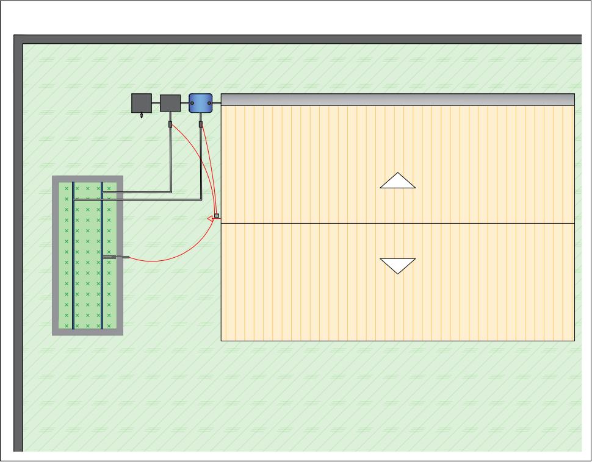

Hoje em dia, ouvimos muito sobre a importância de cuidar do nosso planeta. Muitas pessoas estão procurando maneiras simples de serem mais amigáveis ao meio ambiente em suas vidas cotidianas. Como o naturalista David Attenborough nos lembra, nosso planeta é incrível, mas está enfrentando desafios sérios devido à maneira como o tratamos. Uma maneira de ajudar a enfrentar esses desafios é praticar a compostagem de resíduos de alimentos e a coleta de água da chuva. Isso significa que não desperdiçamos comida e usamos a água da chuva de maneira inteligente. Além disso, essas práticas são ótimas para nossas casas e jardins, pois reduzem a quantidade de lixo que produzimos e incentivam maneiras mais ecológicas de cultivar nossos alimentos. No Brasil, mais da metade do lixo que geramos é composto por coisas que podem se decompor, como restos de comida. Isso nos mostra o quanto é importante cuidar adequadamente desse tipo de lixo e como nossas ações afetam o meio ambiente. Hoje em dia, com nossas vidas movimentadas, a tecnologia pode nos ajudar a fazer tudo isso de maneira mais fácil. O dispositivo chamado Arduino Uno R3 desempenha um papel importante nessa jornada. Ele nos permite criar sistemas que economizam tempo e recursos, ao mesmo tempo em que contribuem para a preservação do meio ambiente. Automatizar essas práticas não apenas torna as coisas mais eficientes, mas também ajuda a proteger nosso planeta. Isso nos ajuda a encontrar um equilíbrio entre nossas vidas ocupadas e nosso compromisso com um futuro mais sustentável e responsável.
O projeto vai abordar alguns sistemas um de captação de água da chuva
baseado em um sistema de calha, cano PVC, e uma bombona para armazenar, um sistema de compstagem, para a
fertilação de uma horta
e Arduino UNO R3 e valvulas solenoides para a automatização desses processos de irrigação e fertilização
Fonte:Os Autores
Fonte:Os Autores
Para automatizar a regagem e fertilização, usaremos canos de PVC devido ao baixo custo e durabilidade. Além disso, instalaremos um sensor de umidade do solo no centro da horta para monitorar as condições do solo e fornecer água com precisão. O Arduino UNO R3 atuará como o cérebro do sistema, emitindo comandos específicos para os componentes. Uma tela LCD exibirá informações importantes, e válvulas solenóides controlará a passagem de água e do chorume quando necessário. Isso é possível graças ao agendamento prévio, podendo ser analógico ou digital, que inclui as datas e as horas programadas para iniciar e encerrar o processo de irrigação automaticamente, sem a necessidade de ser feito manualmente. Apesar dos benefícios da automatização, é importante reconhecer suas limitações, como a dependência de energia elétrica e a necessidade de manutenção ao longo do tempo para assegurar o funcionamento e o desempenho ideal. O cultivo da horta também requer cuidados regulares e está sujeito às variações climáticas. A rotação de culturas e o conhecimento detalhado sobre cada planta são essenciais para o sucesso. Resumidamente, este projeto tem como objetivo promover a popularização das hortas residenciais, que desempenham um papel crucial na redução de resíduos que poderiam ser reutilizados de forma mais eficiente. Através da automatização, torna-se mais fácil alcançar esse objetivo, enquanto destacamos seus benefícios para a saúde, meio ambiente e educação. A adoção de práticas sustentáveis e tecnologia pode tornar o cultivo de alimentos em casa mais acessível e eficiente.Espera-se que esta pesquisa possa contribuir para entendimento geral de funcionamento de uma horta residencial e o uso do arduino. Com base nas pesquisas realizadas, pretende-se informar e mostrar que é possível dar destino final sustentável para os sedimentos orgânicos e automatizar o processo de irrigação e fertilização. Com uma ampla pesquisa podemos analisar que um dos resultados é que esta forma de horta se torna uma atividade acessível para entusiastas no assunto . A análise completa dos resultados destaca a acessibilidade. Este projeto servirá como uma base sólida para futuras pesquisas.Além disso, esta oportunidade permitiu demonstrar minhas habilidades e contribuir significativamente para o avanço do conhecimento na área, enriquecendo a comunidade acadêmica e científica. Tenho a esperança de que o sistema de automatização com Arduino engaje tanto os leitores quanto educadores que podem usar o projeto de uma Horta Automatizada como ferramenta pedagógica. Isso simplificará o ensino de decomposição, compostagem e o próprio funcionamento de hortas, em uma experiência de aprendizado eficaz e esclarecedora. Além disso, o projeto incorpora uma abordagem sustentável ao reaproveitar a água da chuva para a irrigação da horta, contribuindo para uma gestão responsável dos recursos hídricos.
Apesar de não conseguir ficar no pódio na FECITEL 2023 nossa expectativa é alcançar um alto nível de envolvimento com a horta automatizada e criar um excelente material didático que possa ser utilizado por professores e estudantes. Esperamos que este projeto seja implementado nas residências de entusiastas que procuram uma maneira de realizar isso. Além disso, visamos a sua utilização no meio acadêmico como uma ferramenta de estudo. Através desta pesquisa, almejamos alcançar uma economia significativa e a redução do desperdício de água. Também buscamos promover a exploração mais ampla da cultura de plantas, promovendo uma prática sustentável de agricultura urbana. A combinação de seu potencial como fonte de renda, recurso didático no ensino de ciências, terapia e promoção de uma alimentação saudável torna a Horta Urbana uma solução variável altamente benéfica. No decorrer deste projeto, exploramos como a automatização, com o uso do Arduino UNO R3, pode otimizar a irrigação e fertilização, tornando o cultivo de uma horta urbana ainda mais acessível e eficiente. O monitoramento da umidade do solo, a automação da irrigação e o uso do chorume como fertilizante são apenas alguns exemplos de como a tecnologia pode ser aplicada para melhorar os resultados e reduzir o esforço do cultivador.